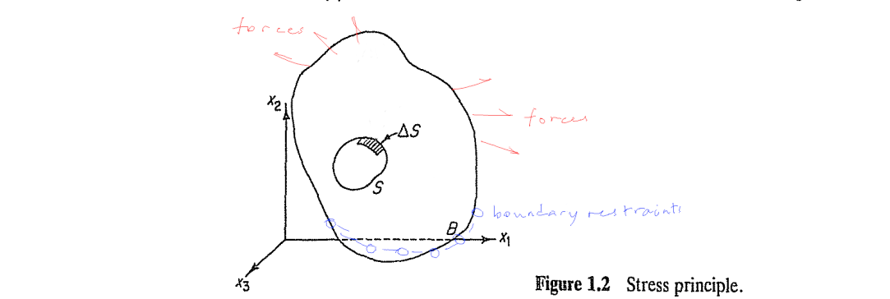
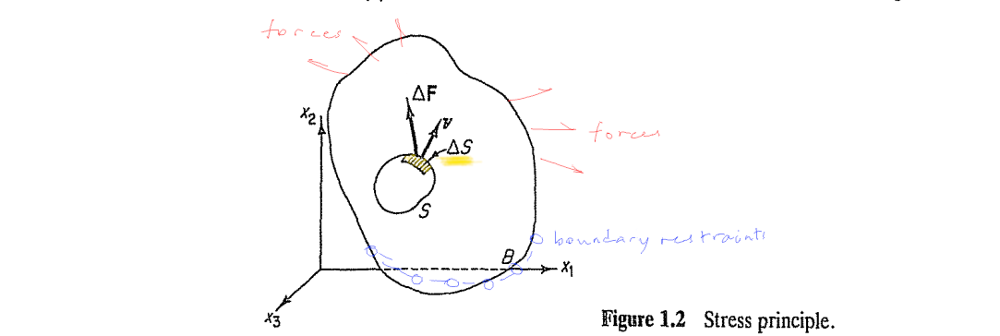
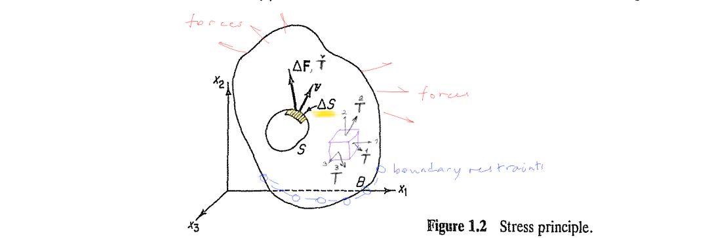
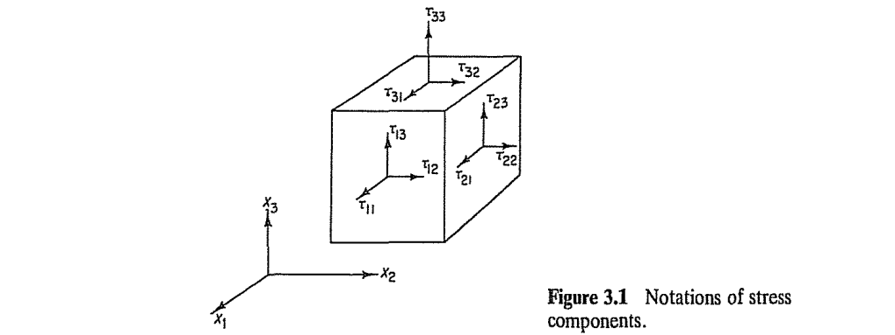
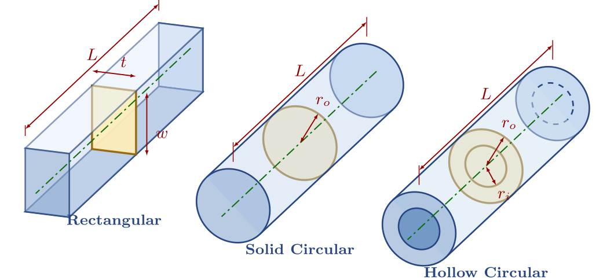
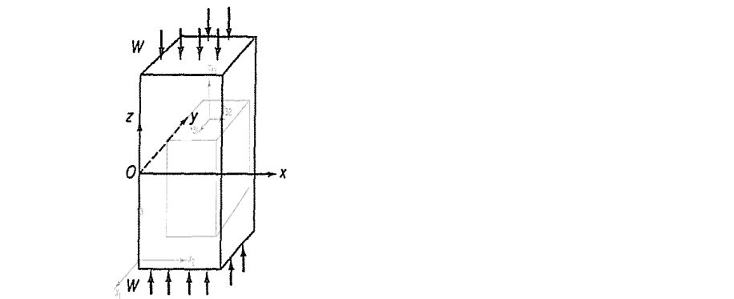
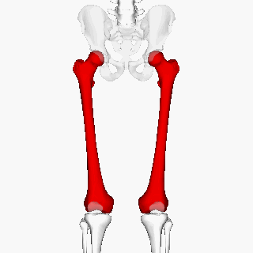

Consider a material \(B\) occupying a spatial region \(V\). The body is transmitting a balanced load system shown with surface forces in red and boundary constraints in blue. A traction field arises within the body during this transmission. The word traction roughly describes the flow of load per surface. To illuminate the traction field in a region visualize a closed surface \(S\) around it and imagine the interaction between the inside (\(-\)) and the outside (\(+\)) of \(S\).

Let a neighborhood \(\Delta S\) on \(S\) have an outward unit normal \(\boldsymbol{\nu}\), with its direction pointing outward from the interior. Let the accumulation of load applied by the (\(+\)) side on the (\(-\)) side passing thru \(\Delta S\) be represented by \(\Delta \mathbf{F}\). The stress hypothesis can be stated: as \(\Delta S\) tends to a small but bounded size \(\alpha\), the ratio \(\Delta \mathbf{F}/\Delta S\) tends to a definite limit \(d\mathbf{F}/dS\), and the moment of the force acting on the surface \(\Delta S\) about any point within the area vanishes. This limiting vector, called as the traction or the stress vector can be written as \[ \overset{\nu}{\mathbf{T}} = \frac{d\mathbf{F}}{dS}. \]

At an internal point, the standard procedure is to calculate the tractions \(\overset{1}{\mathbf{T}}, \overset{2}{\mathbf{T}}, \overset{3}{\mathbf{T}}\) that arise on the planes cornered by a Cartesian triad \(\boldsymbol{e}_1, \boldsymbol{e}_2, \boldsymbol{e}_3\).

The tensor, \(\boldsymbol{\tau}\), constructed by stacking the three Cartesian internal traction vectors in rows is called as the stress tensor. The stress tensor components read \[ \begin{bmatrix} \tau_{11} & \tau_{12} & \tau_{13} \\ \tau_{21} & \tau_{22} & \tau_{23} \\ \tau_{31} & \tau_{32} & \tau_{33} \end{bmatrix} = \begin{bmatrix} \overset{1}{T_1} & \overset{1}{T_2} & \overset{1}{T_3} \\ \overset{2}{T_1} & \overset{2}{T_2} & \overset{2}{T_3} \\ \overset{3}{T_1} & \overset{3}{T_2} & \overset{3}{T_3} \end{bmatrix} \hspace{2em} \mathrm{or} \hspace{2em} \tau_{ij} = \overset{i}{T_j} \]

The state of stress at a point in a material is described by internal traction vectors on a differential cube element.
Freehand depiction of traction vectors on the cube
In parallel with the parts of the internal traction vectors, the stress components that are normal to the plane are called as normal stress while those components which are in-plane are known as shear stress. \[ \mathrm{normal} \left\{ \begin{array}{c} \tau_{11} \\ \tau_{22} \\ \tau_{33} \end{array} \right. \hspace{2em} \mathrm{shear} \left\{ \begin{array}{c} \tau_{12}, \tau_{13} \\ \tau_{21}, \tau_{23} \\ \tau_{31}, \tau_{32} \end{array} \right. \]
Freehand depiction of traction vectors on the cube
A member (independent part of a structure) is said to be slender, if it has a great length to thickness ratio, i.e., \(L/T>>1\), and a constant or slightly-varying cross section swept along the normal to the cross-section plane (a.k.a. member’s longitudinal or axial direction). Such objects in geometry are known as cylinders.

Consider a member under a compressive force \(W\). We say that the beam is axially loaded without shear. Applying the stress hypothesis, we will obtain the relevant traction vector.

Take a section of the member using the \(x_3\) plane from the mid-span (region)
The mapping \(\boldsymbol{\nu} \to \boldsymbol{e}_3\) yields \(\overset{\nu}{\mathbf{T}} \to \overset{3}{\mathbf{T}}\)
About the traction flow, we assume that:
